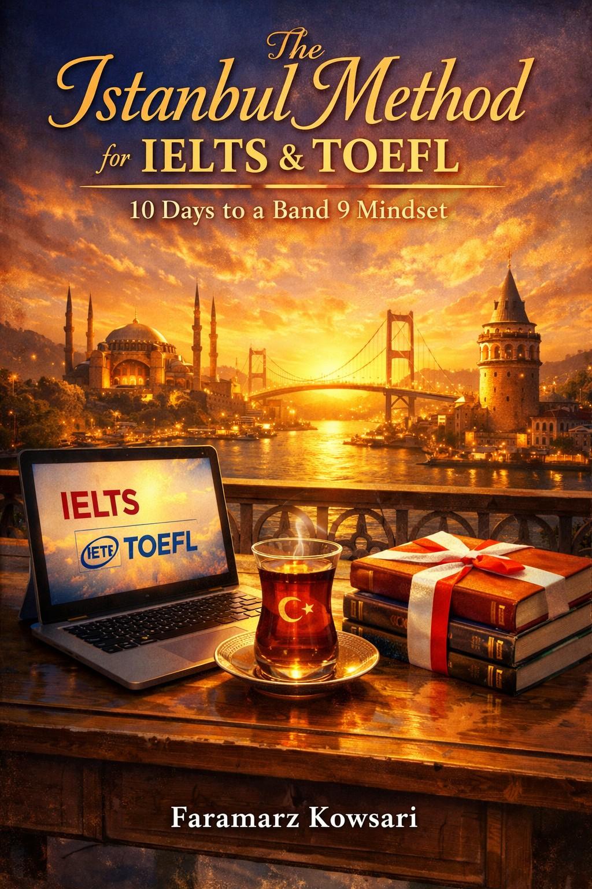

IELTS & TOEFL Masterclass
10 Days to a Band 9 Mindset
The Istanbul Method by Faramarz Kowsari is the ultimate strategic guide for international students aiming to conquer the IELTS and TOEFL English proficiency exams. Unlike traditional textbooks that focus solely on vocabulary and grammar, this comprehensive masterclass unlocks the psychological strategies, pattern recognition techniques, and structural secrets required to achieve a prestigious Band 9 in IELTS or a 110+ score in TOEFL. Master the Reading, Listening, Writing, and Speaking sections in just 10 focused days.
